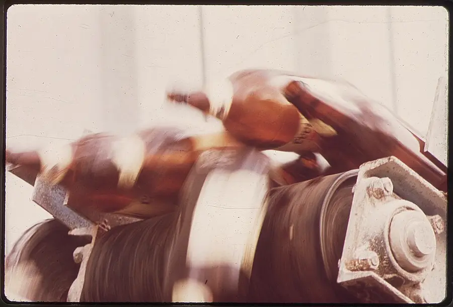
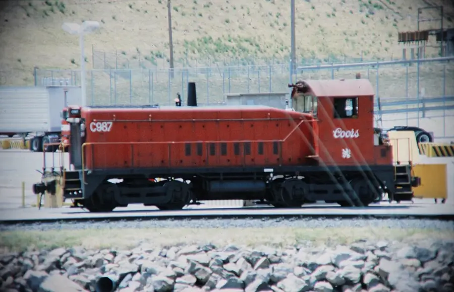
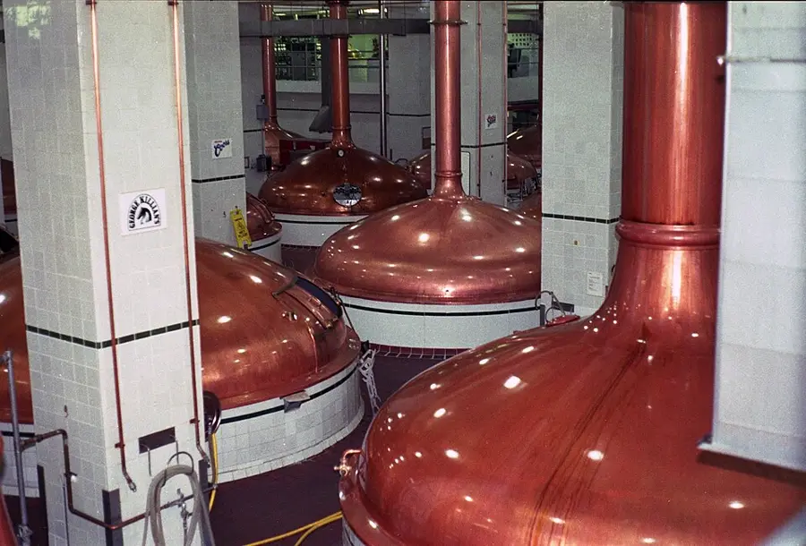

대표 로고대표 브랜드 마크
대표 로고대표 브랜드 마크쿠어스 Coors Brewing Company
쿠어스(Coors Brewing Company)는 미국 콜로라도주 골든에 본사를 둔 양조회사이자 맥주 회사이다. 1873년 Adolph Coors와 Jacob Schueler가 설립했으며 현재 몰슨 쿠어스의 자회사이다.
최종 업데이트
쿠어스는 어떤 브랜드인가
쿠어스는 미국 콜로라도주 골든에 기반을 둔 양조회사이다. 1873년 Adolph Coors와 Jacob Schueler가 설립했으며, 몰슨 쿠어스의 자회사이다.
골든에 있는 첫 쿠어스 양조장은 세계에서 가동 중인 단일 부지 양조장 가운데 가장 크다. 대표 맥주는 체코 또는 필스너 스타일로 설명되며, 회사는 이 맥주의 품질이 보헤미아 계통과 클리어 크리크의 연수에서 비롯된다고 주장했다.
금주법 시기에도 비교적 온전하게 살아남았고, 1986년에는 미국 전역 유통망을 갖추었다. 현재 골든에서 세계 최대 규모의 알루미늄 캔 생산 공장도 운영한다.
쿠어스는 어떻게 시작되고 성장했나
1873년 프로이센 출신 독일 이민자 Adolph Coors와 Jacob Schueler가 미국으로 이주해, 당시 콜로라도 준주의 골든시티에 양조장을 세웠다. 체코 이민자 William Silhan에게서 필스너 스타일 맥주의 제조법을 구입했으며, Coors가 $2,000, Schueler가 $18,000를 투자했다.
1880년 Coors가 동업자의 지분을 사들여 단독 소유주가 되었고, 회사 이름은 Adolph Coors Golden Brewery로 바뀌었다. 1913년에는 Adolph Coors Brewing and Manufacturing Company로 정식 법인화되었다.
쿠어스의 브랜드 아이덴티티는 무엇인가
Adolph Coors가 세운 콜로라도 골든의 양조회사로, 오랫동안 미국 서부에서만 판매되어 희소성을 얻은 뒤 1986년 전국 유통에 이르렀다.
쿠어스의 대표 제품과 서비스는 무엇인가
수십 년 동안 쿠어스 맥주는 미국 서부에서만 판매되었다. 11개 주 유통 지역에는 캘리포니아와 텍사스가 포함되었고, 워싱턴과 몬태나는 1976년에 추가되었다.
1959년에는 미국 양조업체 최초로 전알루미늄 2피스 음료 캔을 사용했고, 같은 해 저온살균을 중단하고 멸균 여과를 도입했다. 금주법 시기에는 맥아유와 무알코올 대용 맥주 Manna를 생산했다.
골든에서는 Rocky Mountain Metal Container(RMMC)라는 알루미늄 캔 공장을 운영하며, Herold Porcelain의 후신은 CoorsTek으로 이어지고 있다.
쿠어스는 지금 어떤 상태인가
현재 몰슨 쿠어스의 자회사이다. 골든의 첫 쿠어스 양조장은 세계에서 가동 중인 단일 부지 양조장 가운데 가장 크다.
회사는 1986년 미국 전역 유통을 확립했고, Adolph Coors Company의 비양조 자산은 1989년부터 1992년 사이에 분리되었다.
쿠어스 로고는 어떻게 변해왔나
대표 로고대표 브랜드 마크사진으로 보는 쿠어스의 역사



자주 묻는 질문
쿠어스는 어느 나라 브랜드인가요?
쿠어스는 미국의 식음료 브랜드입니다.
쿠어스는 언제 설립되었나요?
쿠어스는 1873년 설립되었습니다.
쿠어스의 브랜드 아이덴티티는 무엇인가요?
Adolph Coors가 세운 콜로라도 골든의 양조회사로, 오랫동안 미국 서부에서만 판매되어 희소성을 얻은 뒤 1986년 전국 유통에 이르렀다.
쿠어스의 대표 제품은 무엇인가요?
수십 년 동안 쿠어스 맥주는 미국 서부에서만 판매되었다.
쿠어스는 현재 어떤 상태인가요?
현재 몰슨 쿠어스의 자회사이다.
쿠어스의 창업자는 누구인가요?
쿠어스의 창업자는 Adolph Coors입니다(위키데이터 기준).
쿠어스의 본사는 어디에 있나요?
쿠어스의 본사는 골든에 있습니다(위키데이터 기준).
출처와 검증
쿠어스 관련 참고: 공식 웹사이트 · 위키데이터 Q1407305 · 한국어 위키백과 · 영어 위키백과. 브랜드명은 한글과 원어를 함께 표기하되 데이터에 없는 표기는 만들지 않습니다. 기원 국가·설립연도는 검수된 정의문에서 확인된 값을 우선하고, 없을 때만 공식 웹사이트 URL이 일치하는 위키데이터 개체의 값을 씁니다. 위키데이터 값은 2026-11-08 기준입니다.